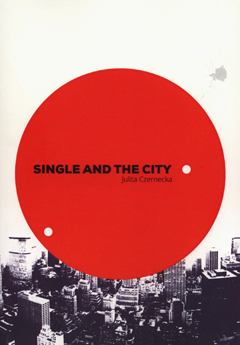

 By now, you have probably seen far too many of those “why are you single” articles. Way too often, the authors treat singlehood as a disease that needs to be cured, and they tell you what you did wrong that led you to get (or stay) sick. I’ve made fun of those singles-bashing lists and also offered some more positive takes on single life in The Real Reasons for Living Single。
到目前为止，你可能已经看过太多的“为什么你单身”的文章。在很多时候，作者们对于单身是作为一种需要被治愈的疾病，并且他们告诉你你做错了什么而导致这种病态。我常取笑那些单身人士并提供一些积极的建议给仍就过着单身生活的人士。
In addition to the disease-mentality, there is something else that is troubling about those articles – they are almost always just the opinions of some outside observer. They rarely ask single people what they think about their single lives。
除了病态的心态，还有其他因素是那些文章的困扰。他们几乎都是一些外界的观察者的观点。他们很少询问单身人士他们对于自己的单身生活是如何想的。
Happily, that has changed with a new typology offered by the Polish sociologist Julita Czernecka, author of Single and the City. She asked a select group of Polish single people – 30 men and 30 women – to talk about their single lives. The people she interviewed are not a representative sample of Polish singles, so her results are more suggestive than definitive. I think they provide a good alternative, though, to people who offer nothing but their own opinion as to why other people are single。
有幸的是，这已经被波兰社会学家朱列达泽内卡(《单身与城市》的作者)的新象征主义改变了。她调查了一组波兰的单身人士，30个男人和30个女人，来讲述他们的单身生活。她采访的人并非波兰单身人士中有代表性的样本，所以她的样本与其说是决定性的，不如说是提示性的。我认为他们提供了一个好的选择，至于为什么其他人单身，人们也只是提供了他们自己的观点。
The 60 singles Czernecka interviewed fit the profile of people she was most interested in learning about. They were financially stable college graduates between the ages of 27 and 41 who had not been in a serious romantic relationship for at least two years. None had ever been married and none had children, but they were all still old enough to have children if they ever wanted to。
泽内卡了解了60个单身汉的简介，这是她最有兴趣的部分。他们都是至少有两年没谈过恋爱的27至41岁经济稳定的大学毕业生。没有人结过婚，也没有人有孩子，但他们如果想要孩子的话，也到了该有孩子的年纪。
Here are the 5 types of single people she found. (She did not say how many were in each category。)
这是她发现的五种单身人士。(她没有说每一种有多少人。)
1. Happy singles: These are single people who “fully accept their lifestyle。” They “do not feel the need to be in a relationship。” In fact, they say that they are happy not to be in a serious romantic relationship. They are probably the people I would call single at heart。
1. 乐意单身。这些单身人士完全满足他们的生活方式，他们没有感觉到有需要谈恋爱。事实上，他们是说他们对于没有一场认真的恋爱关系而感到愉快。他们可能就是我们称之为有一颗单身心的人。
2. Accustomed singles: They are similar in many ways to the happy singles, but instead of saying that they are happy with their single lives, they say, “I’m used to being single。” They don’t mean that in any resigned or negative sense. As Czernecka explains, “They have been alone for a while and treat it as their natural state – they do not want to destroy the harmony of their life, or give up their rituals and everyday pleasures for a partner. All emotional needs, the sense of being accepted and of help in everyday life are provided by their family and friends, which is why they say that they ‘do not need anyone else.’”
2. 习惯单身。他们在很多方面与乐意单身的人相似。但不是说他们乐意单身，是说他们习惯单身。他们并不意味着是顺从或是消极的观念。就泽内卡的解释来说，他们暂时是孤独的并把孤独作为自然状态，他们不想要为了另一半摧毁他们这种和谐的生活或是放弃他们的老规矩和乐趣。所有情感上的需要，日常生活中的接受与帮助是由他们的家庭和朋友提供的，这就是为什么他们说不需要其他人。
3. Hurt singles: They have had bad experiences with romantic relationships in the past and do not want to be hurt again. (The Carly Simon lyrics, “haven’t got time for the pain,” sound relevant here。)
3. 受过伤的单身汉。他们在过去谈恋爱的时候有不好的经历并且不想要再受一次伤。(卡莉西蒙：“没有痛苦的时候。”在这听起来是相关的。)
4. All-or-nothing singles: They only want to be with a romantic partner if they can find someone great. They are not going to be in a romantic relationship just to be in a romantic relationship。
5. Romantics: These people are a lot like the all-or-nothings, only with a much more romantic bent. They seem to believe in the fairy tales and the myths. They are sure that their “soul mate” is out there somewhere. Some have broken off decent relationships because their partner did not make them swoon the way they expect to when they finally find their true Princess or Prince Charming。
5. 浪漫的人。这些人和孤注一掷的人很像，仅仅是多了浪漫的癖好。他们似乎相信神话和童话。他们确信他们的灵魂伴侣就在某处。一些人已经断绝了良好关系，因为他们的伴侣没有让他们情迷意乱，他们期望着最终找到他们真正的公主或是迷人的王子。